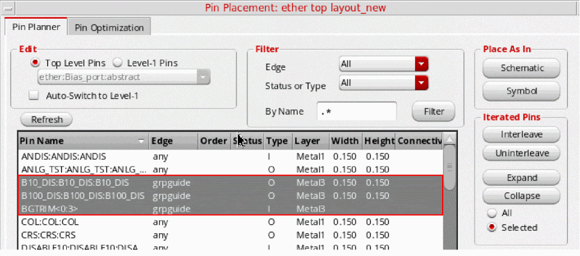
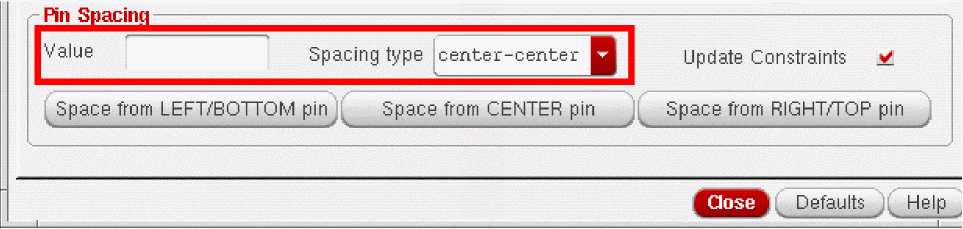

Planning Placement of Top-Level and Level-1 Pins
This section explains how you can use the pin planning functionality to set constraints and plan the placement of the top-level and level-1 pins in your design.
You can use Pin Planner functionality only if there is a place and route boundary available in the layout view. To generate a place and route boundary, use the Connectivity – Generate – All From Source command. See
Pin Planner honors net PROs and pin group guide constraints. When a pin is selected in the pin table, the Pin Planner recognizes its net PRO, if available, and displays the specified layer, width, and height values. Pin Planner also recognizes pins that are associated with pin group guides and ensures the pin placement and distribution follow the pin groups in the specified guide region.
To plan pin placement in a design:
-
Choose either Floorplan – Pin Planner or Floorplan – Pin Optimization command to open the Pin Placement form.
The Pin Planner tab is displayed listing all the pins in the current scope in the pin table.
You can filter or sort the list using the controls provided.
- Click the Pin Name column heading to view an alphanumeric listing of the pins.
-
Select the required pins in the pin table.
Pin Planner supports the placement and distribution of member pins in pin groups in the specified guide region.
 -
Use this form to do one or more of the following.
- Place pins in the same relative positions as in the schematic view. Click Schematic in the Place As In section.
- Place pins in the same relative positions as in the symbol view. Click Symbol in the Place As In section. Pin Planner looks for a symbol view at the same location as the schematic view, followed by the layout view. If not found at both locations, an appropriate warning message is displayed and pins are not placed.
- Place pins in fixed positions on the boundary. See Placing a Pin on a Boundary Edge, Placing Ordered Pins on a Boundary Edge
- Place pins in fixed positions that are not on the boundary. See Placing a Pin in a Fixed Position not on the Boundary.
- Place pins directly on lower-level instance terminals on the same layer. See Placing a Pin on a Lower-level Instance Terminal
- Align level-1 instance pins with the top-level routes. See Aligning Level-1 Pins to Top-Level Routes
- Align soft block pins with the level-1 routes. See Aligning Level-1 Pins with Level-1 Routes
- Place soft block or top-level pins that are connected to multiple hard block pins. See Placing Pins that Are Connected to Hard Block Pins
- Place level-1 pins below top-level buried pins. See Placing Buried Pins
- Place pin groups with any given pin pitch spacing.
- Create vertical and horizontal rails. See Converting a Pin into a Rail, Converting a Rail into a Pin
- Report pins and their assigned locations.
-
Expand and collapse iterated bus pins (
Q<7:0>=Q<7>,Q<6>,Q<5>, and so on.) -
Handle multiple pins on the same net,
gnd.1gnd.2gnd.3.
-
To set the exact distance between two or more ordered pins or between the individual bits of a bus pin:
- In the Pin Spacing group box, type the spacing you require in the Value field, choose the type of spacing from the Spacing type pull down.
- Check Update Constraints to automatically update any constraints (for example, alignment constraints) associated with the selected pins.
If a pin to be spaced has the alignment constraint set up, the placer reads the constraint to determine the appropriate access direction for the pin.
 - When you have finished setting pin constraints, use the Re-Place Pins pull-down to specify which pins can be moved by the placer.
-
Click Apply to set the new attributes for the specified pins.
-
Click Defaults to return all pins to their default positions.
Related Topics
Support for Net PROs in Virtuoso Floorplanner
Return to top